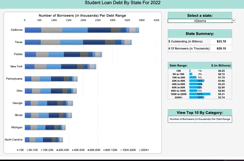

This dynamic interactive dashboard compares the amount of student loan debt with the number of borrowers per state for 2022. The data is divided by dollar amounts ranging from those owning less than $5k in loans to over $200k. The dataset used for this project was obtained from The office of Federal Student Aid. Techniques and formulas used for analysis:
-
A combination of cell range referencing, CHOOSE() function, and data validation lists to create a dynamic chart compatible with Excel for Web.
-
Conditional filtering for generating the values used for the 'Top 10 Categories' charts.
-
Conditional formatting and aggregate functions for tabulating debt and borrower amounts per state.
-
Named Ranges for filtered value sets.
A dashboard summarizing global Monkeypox case statistics, searchable by country name, case count, or by interactive map. Built from queries created in my Data Exploration in SQL project, this dashboard showcases the rate of spread from January 2022 to September 2022, percentage of cases resulting in hospitalization per country, and global case totals aggregated by month.
An exploratory analysis of reported global Monkeypox cases using PostgreSQL. The original dataset contained three tables which I then denormalized into two for more efficient querying. Skills used for this project include:
- Aggregate functions
- Conditional expressions
- Converting data types
- Joins
Created using a custom dataset I designed using the test data generator and API mocking tool - Mockaroo. The goal of this project was to standardize the data, eliminate redundancies, and separate the discrete components of columns containing multiple values. The dataset schema can be viewed here. Skills used for this project:
- Database normalization
- Managing tables
- Regular expressions
- String functions